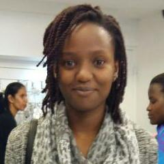

About Me
Age: 21
Gender: Female
Nationality: Swazi
Favourite Season: Winter
Hobbies: Reading, Singing, Baking
About Me
I am a 2nd year BSc undergraduate, majoring in Computing at the African Leadership College (ALC), Mauritius campus. I’m passionate about music and writing and love seeing people do what they love and helping others work towards doing the same.
My main focus of study is in Programming, Databases and Web Design. Upon graduation I hope to utilise these programmes dynamically to create human-centred designed products and services for music education in Africa. More specifically, I wish to do this by creating accessible learning platforms centred on music theory, music technology and voice production for students of varied ages.
The Job
Generally, an intern at MTN Swaziland is expected to learn more than one aspect of the company during their time spent at work. Hence, the existence of a rotational system. I had the opportunity to work in the Marketing Department for the first half of my internship and in the IT Department for the second.
My daily tasks in the Marketing Department included compiling documents, communicating with customers, testing products, troubleshooting with MTN vendors and generally understudying members of my team. Additional projects I was involved in during this time were the Esicojeni End of Hunger Walk and the MTN Apps Challenge. Both of these required communication skills and project management as they involved direct communication with MTN customers and partnering companies.
The Job
In the IT Department my daily task was to shadow individuals for 2-3 days each, learning the systems that they work with and how they troubleshoot user problems. Additional task included doing Integration and Synchronization using a Retail Management System (RMS) every morning.
Dear Future Intern
People are willing to help you learn, but you won’t know unless you ask. Be proactive about your learning. E.g. Ask to shadow individuals for a couple of days to learn more about what they do.
Everything is part of the internship. Take nothing to heart; adopt a learner’s mindset, asking effective questions always. Don’t be picky about what you want to learn, or else you’ll never know the things you don’t. Learn all that you are given to learn.
When people let you in, get in! Don’t be picky about people. Not everyone has to be your friend, but everyone is someone to be friendly with.
It’s the little things - Greet in the morning. Smile when you greet. Ask genuine questions about the wellbeing of others.
Take on every day believing it will be a good one, regardless of the day’s tasks (or lack thereof 0_0)